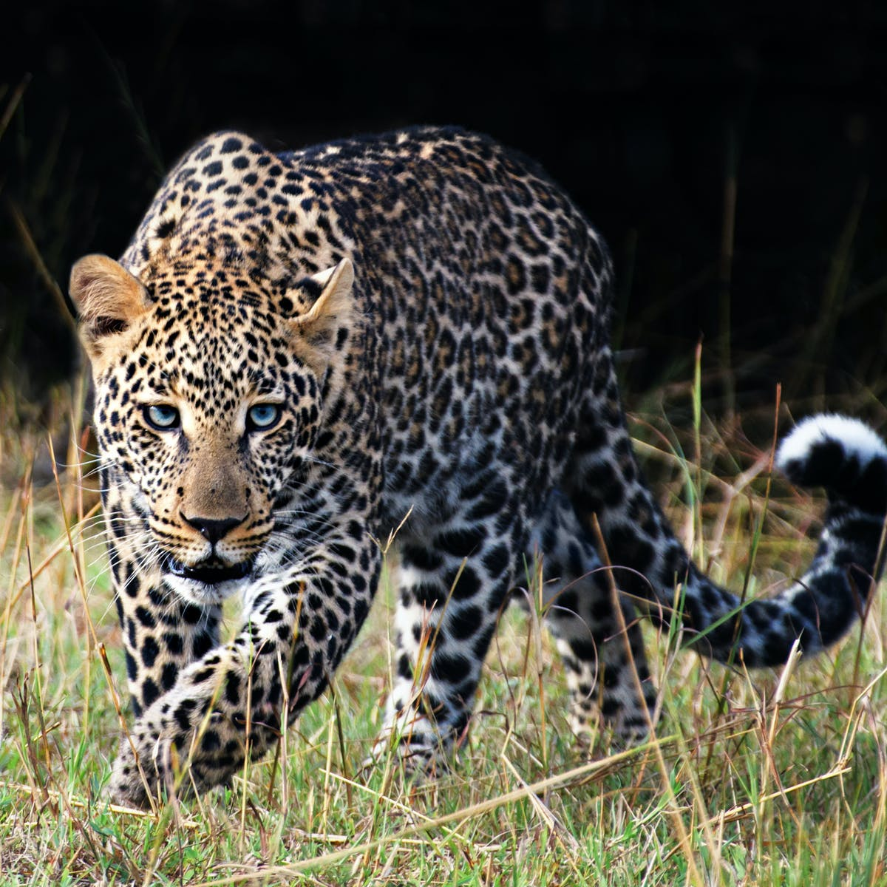
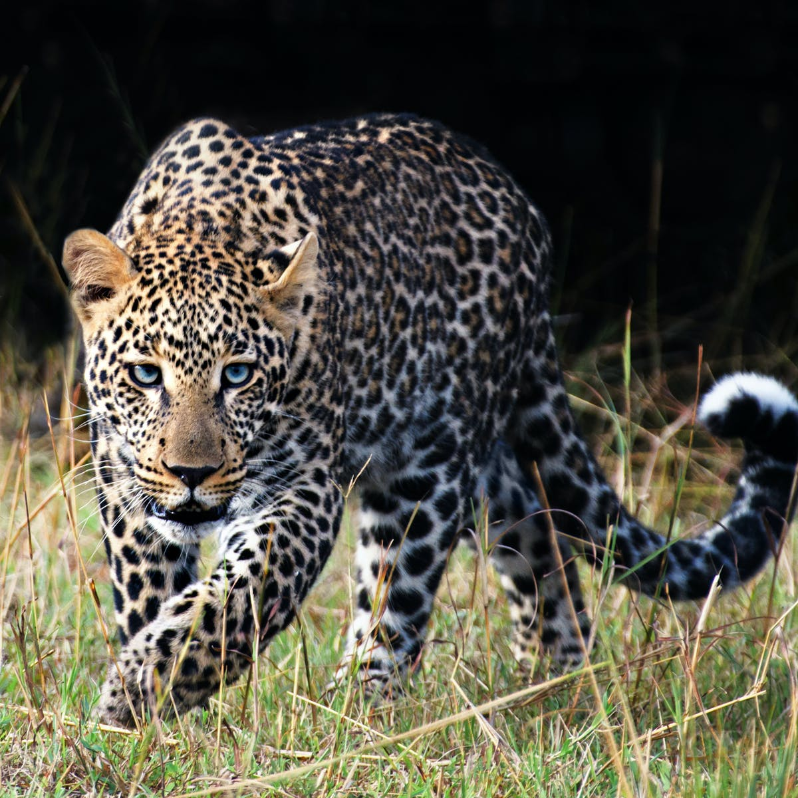

SOUTH AFRICA BIG FIVE ANIMALS
 

Elephant
Elephant History
Facts About Elephant
In South Africa the Addo Elephant and Kruger National Park protect large herds. Due to rigorous conservation measures the Elephant population in South Africa has grown from a estimated 120 in 1920 in 4 locations, to 10 000 at 40 locations to date.
Elephants plant trees and fight climate change. Studies have shown that elephants help protect forest health in central Africa by distributing the seeds of trees. Because they roam over such great distances, elephants play a key role in spreading tree seedlings far and wide.
Leopard
Leopard History
Facts About Leopard
Leopards have the largest distribution of any wild cat. ... In South Africa, leopards are found throughout the country except for the greater Karoo basin. They are found in the Western Cape, KwaZulu-Natal, Northern Cape, North West, Limpopo, Gauteng, Mpumalanga and the Eastern Cape.
Leopards are carnivores, but they aren't picky eaters. They will prey on any animal that comes across their path, such as Thomson's gazelles, cheetah cubs, baboons, rodents, monkeys, snakes, large birds, amphibians, fish, antelopes, warthogs and porcupines.
Lion
Lion History
Facts About Lion
Lions used to occur throughout South Africa but due to their merciless persecution in South Africa (due to conflict with humans and their interests), they are now mainly restricted to protected areas. They only occur naturally in the Northern and Eastern parts of South Africa.
Lions can go up to four days without drinking water, but if available, they will drink water every day. Lions do need to eat every day. Adult female lions need to eat about 11 pounds of meat each day, while adult males eat 16 pounds or more every day. While lions primarily prey on large herbivores such as zebra, wildebeest, and buffalo, they have been known to prey on smaller animals like mice.
Buffalo
Buffalo History
Facts About Buffalo
There is only one species of buffalo in Africa, but four distinct subspecies exist: forest buffalo, West African savanna buffalo, Central African buffalo, and southern savanna buffalo. Savanna buffaloes are large, heavy cow-like animals.
Buffaloes graze mainly by night and early morning and rest up in shade during the heat of the day. They usually drink water during the day. Often at night buffalo herds will also lie down to rest for periods of time.
Rhino
Rhino History
Facts About Rhino
White rhinos mainly live in South Africa, but they have also been reintroduced to Botswana, Namibia, Swaziland, and Zimbabwe. ... South Africa houses 40% of the total black rhino population. There are some black rhinos in the region spread between Cameroon and Kenya
Rhinos make an array of funny noises when they’re communicating. During confrontations, they growl and make ‘trumpet calls’. They snort when they’re angry, make sneeze-like calls as alarms, and literally scream if they’re scared. Rhinos also communicate through their poo and urine, using a series of toilets within their territories known as middens.